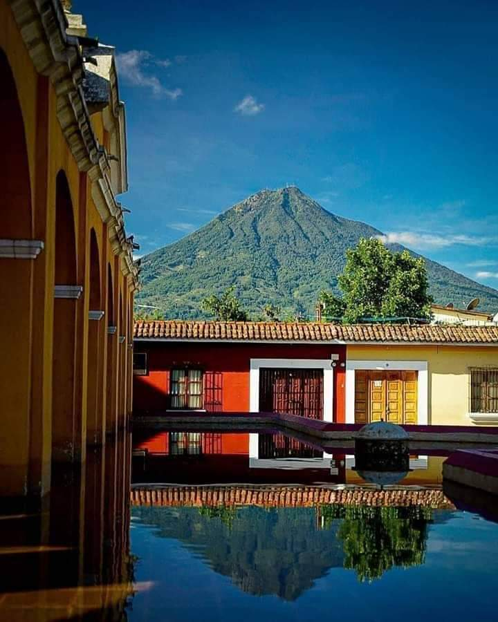
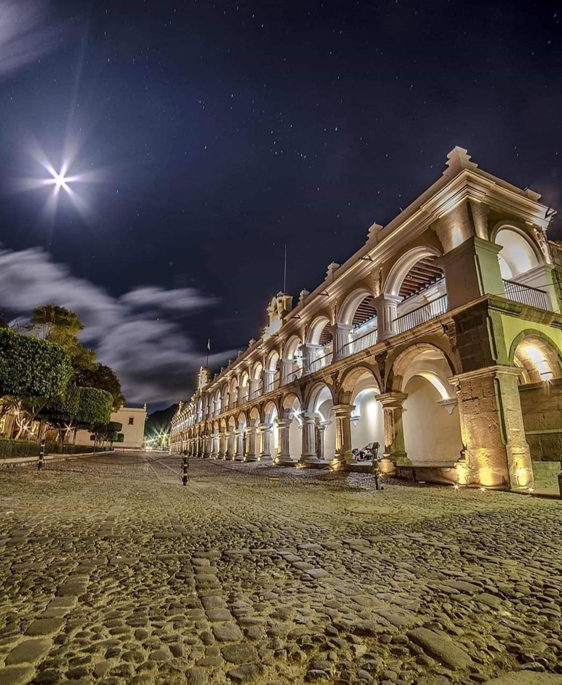

Antigua Guatemala
La ciudad de Santiago de los Caballeros de Guatemala, cuyo nombre oficial e histórico es Muy Noble y Muy Leal Ciudad de Santiago de los Caballeros de Guatemala y popularmente nombrada en la actualidad como Antigua Guatemala, es cabecera del municipio homónimo y del departamento de Sacatepéquez, Guatemala; se ubica a aproximadamente 25 kilómetros al oeste de la capital de la República de Guatemala, y a una altitud de 1470 msnm. Actualmente la ciudad se ubica dentro de las 20 ciudades más importantes de Guatemala.
Hubicacion Geográfica
- Noroeste: Santo Domingo Xenacoj, Jocotenango y Pastores
- Este: San Bartolomé Milpas Altas, Santa Lucía Milpas Altas, Magdalena Milpas Altas
- Sureste: Santa María de Jesús
- Suroeste: Ciudad Vieja
- Oeste: San Antonio Aguas Calientes
|
Tiene una vista sorprendente Antigua es una ciudad impresionante desde todos los ángulos. Las personas pueden observar volcanes, montañas y coloridas casas, cada vez que ven hacia cualquier lugar |

|
|

|
Arquitectura colonial El sitio comparte que caminar por las calles empedradas de La Antigua es como retroceder en los días del colonialismo español. Las personas deben realizar un paseo para observar cada edificio y tomarse fotografías junto a estos. |
|
Puedes escalar un volcán activo Los visitantes podrán trasladarse a otro punto del país y escalar el Volcán Pacaya en el que podrán asar malvaviscos en la cima. Este volcán se encuentra activo, en el camino se observan varios ríos de lava. |

|

|
Un excelente café Según Culture Trip, el café que se produce en Antigua se encuentra entre uno de los mejores de América Latina. |